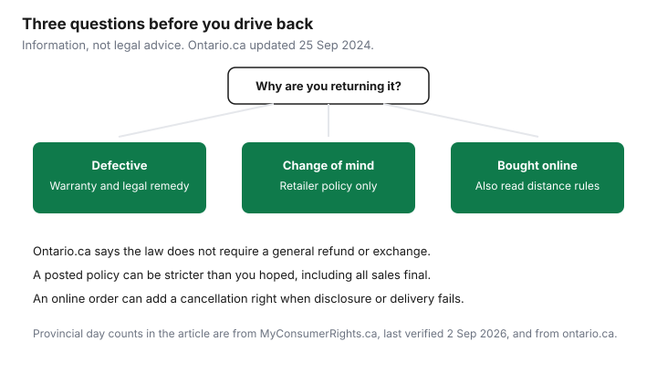

Household Items and Supplies · Canada
Store Return Policies in Canada: There's No Legal Change-of-Mind Right—How to Protect Yourself Before You Buy
A lot of people walk into a store believing the law makes the store take it back. Ontario's consumer page says otherwise. Updated 25 September 2024 and read 26 September 2026, ontario.ca says many retailers have a return policy, but the law does not require them to, and the Consumer Protection Act does not provide a general right to return or exchange goods. The terms of the agreement may still require a refund in a particular case. That is a narrower right than "I changed my mind."
This page is information, not legal advice. It lines up the retailer policies that could be opened or retrieved on 26 September 2026, then the provincial points that ontario.ca and MyConsumerRights.ca actually state. Warranties you already have are the extended-warranty guide. Quebec's additional warranty of good working order is the Quebec guide. A mattress trial is the mattress guide, not a general right to return furniture.
Key takeaways
- Ontario.ca, updated 25 Sep 2024, says the law does not require retailers to offer refunds or exchanges.
- Change of mind follows the posted policy. A defect is a different remedy, including misrepresentation and warranty rules.
- Costco's FAQs, published 10 Oct 2025: listed electronics and major appliances within 90 days. Countertop microwaves are excluded from that list.
- Best Buy text retrieved 26 Sep 2026: most items 30 days; open-box, floor-model, and Miele major appliances are non-returnable.
- Online orders can add cancellation rights when delivery or disclosure fails. Day counts below are attributed to the page that stated them. This is not legal advice.
What Canadian law does and doesn't require (Ontario example, other provinces summarised)
Ontario.ca tells you to ask, before you buy, whether the store offers a refund, an exchange, or store credit, what proof of purchase it wants, and whether an opened item can come back. It recommends getting the policy in writing if you think you may have to return the item. It also says you have the right to ask for a refund if a business misrepresents a product or service. A written contract is required if the purchase from a business is more than $50, including a deposit, and that contract must include credit terms, the payment due date, and delivery details. None of that is a change-of-mind right.
MyConsumerRights.ca, last verified 2 September 2026, says Canadian law does not recognise a general refund simply because you changed your mind, and that a posted all-sales-final policy is typically enforceable for change-of-mind returns. Its provincial table, which this guide uses as the second source beside ontario.ca, says Ontario's Consumer Protection Act, 2002, does not require a change-of-mind refund, gives 10 days from receiving a written copy of a direct agreement, and says that where ordered goods or services are not supplied within 30 days of the date in the contract, the agreement may be cancelled, with most refunds due within 15 days. The same page says a replacement statute, the Consumer Protection Act, 2023, is not yet in force. British Columbia, on that table: no change-of-mind refund; 10 days from receiving a copy of a direct sales contract; a distance contract must state a supply date, and if goods are not provided within 30 days after that date the contract may be cancelled within 30 days, with the refund due within 15 days. Read the statute or a clinic before you rely on a day count in a dispute.
Defective vs change-of-mind: different remedies
Change of mind is the store's policy: a window, a receipt rule, and a list of final-sale goods. A defect is the promise that the item works. Ontario.ca says a warranty is a promise to repair or replace a defective item, asks you to find out who offers it, and points you to the Competition Bureau for misleading warranty claims. The Bureau does not, on that page, get your money back for you. MyConsumerRights.ca describes implied-quality rules and says Quebec's legal warranty applies to every consumer sale, separate from the manufacturer's warranty and from the store's return desk. How a Quebec claim starts is the other guide, not a paragraph you should invent at the till.
Keep the two speeches separate. "I don't want it" uses the return policy. "It does not work" uses the warranty and, where it applies, the misrepresentation or legal-warranty route. A store that refuses a change-of-mind return has not, by that refusal alone, refused a defect claim. Write down what is wrong, keep the receipt, and follow the page that matches the problem. Card purchase protection is whatever your certificate says. This guide does not rank cards.
Retailer policy table: Costco, Best Buy, Walmart, Canadian Tire, IKEA, Amazon.ca
Policies move. The cells are what the named pages said when they were opened or retrieved on 26 September 2026. Walmart's English help page showed a bot check, so this table does not print a Walmart day count. If the desk's printout disagrees with a cell, the printout is the policy they can apply today.
| Retailer | Standard window | Exceptions to remember | Receipt |
|---|---|---|---|
| Costco | Satisfaction guarantee, with a 90-day limit on listed electronics and major appliances. Published 10 Oct 2025 | The 90-day list includes televisions, major appliances, computers, tablets, and other named electronics. The footnote excludes countertop microwaves from that list. Returns are also reviewed case by case. Gold and silver bullion and gift cards are non-refundable | Without a receipt, a return may be accepted if the item can be verified as Costco's, at the warehouse manager's discretion |
| Best Buy | Text retrieved 26 Sep 2026: most products within 30 days of the in-store purchase, or 30 days from online delivery. Direct request returned 403 | Major appliances that are open-box, floor models, or Miele are non-returnable. Opened items that can be returned must be like-new. Some categories must be unopened. The low-price page was not re-opened here | The retrieved text requires original packaging |
| Walmart | Not printed. The English return URL showed a bot check | Do not guess a day count from a marketplace-seller manual | Read the page at the store. This draft does not supply one |
| Canadian Tire | Unopened items in original packaging, with a receipt, within 90 days: refund to the original payment or an exchange. Retrieved 26 Sep 2026 | Opened, damaged, or not resalable items may be refused. Electronics in the named categories: 30 days. Auto electronics: 14 days. Mattresses and portable beds: unopened only. Clearance, final sale, and as-is: non-refundable. A defective item is referred to the manufacturer warranty | Credit or debit look-up for 90 days. A return without a receipt may still be refused. Photo ID may be required |
| IKEA | Unopened, new items: 365 days with proof of purchase, refund to the original payment. Opened items: 90 days if unused and resaleable, at IKEA's discretion. Opened 26 Sep 2026 | Mattresses: one exchange or a return within 90 days. Custom-cut fabrics and custom countertops excluded. Dirty, stained, damaged, or adapted products excluded | Proof of purchase. The mattress page on that policy says to bring the receipt |
| Amazon.ca | Most items within 30 days of delivery if original or unused. Opened 26 Sep 2026 | Final Sale items are non-returnable. A third-party seller who ships the item takes the return, and must offer a Canadian address, a prepaid label, or a refund without a return. A-to-z is a separate third-party path | Start from Your Orders. The product page states that item's eligibility |
Final-sale traps: open-box appliances, mattresses, clearance
Open-box is the trap on a large appliance. Best Buy's retrieved policy lists major appliances that are open-box, floor models, or Miele as products that cannot be returned. Do not confuse that with a new, sealed appliance, which the same retrieved text puts in the ordinary 30-day window unless another exception applies. Canadian Tire's retrieved list makes clearance, final sale, and as-is merchandise non-refundable, and it allows mattresses and portable beds back only if unopened. IKEA's mattress rule, opened the same day, is one exchange or a return within 90 days, which is a trial, not an open-ended change of mind. The mattress guide compares other trials. Do not mix those night counts into a Canadian Tire clearance mattress.
Costco's 90-day electronics and major-appliance limit is real, and the published FAQ excludes countertop microwaves from the list that carries that limit. The same FAQ says all returns are reviewed case by case and that some are at a manager's discretion. A 90-day sentence is not a promise that every warehouse will treat every microwave the same way. Read the sign on the unit. If it says final sale, believe the sign over a general webpage that did not mention that unit.
Online and distance purchases: provincial cancellation rights
Buying online does not create a universal cooling-off period. Ontario.ca says the Act sets refund requirements for some agreements and still does not give a general right of return. The internet-agreement details used here are from MyConsumerRights.ca, last verified 2 September 2026, not from a second sentence on the ontario.ca page this draft opened. On that site's table, Ontario: if goods or services are not supplied within 30 days of the date in the contract, the agreement may be cancelled, and most refunds are due within 15 days. Quebec: no statutory change-of-mind refund; 10 days from receiving the contract from an itinerant merchant; a distance contract not performed within 30 days of the stated date may be cancelled for up to one year, and the right is lost if you accept delivery after those 30 days. British Columbia's distance rule on the same table is the 30-day supply test described above, with cancellation inside 30 days of that failed date and a refund due within 15 days.
A retailer policy can be more generous than those rules, and IKEA's 365-day unopened window is an example of a policy, not of a statute. If the seller never delivers, the distance-contract rule is the one to read with a clinic or the provincial consumer office. If the box arrived and you simply regret it, you are back to the retailer's policy. Cancelling a membership or a subscription is a different problem, covered on the cancel-path guide. Price adjustments after a price drop are the adjustment guide, not a return.
| Province | Change of mind | Defective or not as promised | Distance or direct contract, as that page stated it |
|---|---|---|---|
| Ontario | No general right. ontario.ca and MyConsumerRights.ca agree | ontario.ca: you can ask for a refund if the business misrepresented the product or service. Warranty terms are separate | MyConsumerRights.ca: 10 days from a written direct agreement; non-supply within 30 days of the contract date may allow cancellation; most refunds due within 15 days. CPA 2023 not yet in force, on that page |
| Quebec | MyConsumerRights.ca: no general change-of-mind refund | The same page says the legal warranty applies to every consumer sale. Use the Quebec warranty guide for the claim path | 10 days from receiving an itinerant-merchant contract. Distance contract not performed within 30 days of the stated date: cancel for up to one year, lost if you accept a late delivery |
| British Columbia | MyConsumerRights.ca: no general change-of-mind refund | Not restated from a B.C. statute page this draft opened. Do not copy Ontario's misrepresentation sentence into B.C. without reading B.C.'s act | 10 days from a copy of a direct sales contract. Distance: supply date required; if not provided within 30 days, cancel within 30 days of that date; refund due within 15 days |
Keep-your-receipt system: digital receipts and warranty folders
Keep the receipt for the longest clock that can still matter: the return window, any price-adjustment window, and the warranty. A photo in a folder named with the store, the item, and the date is enough. You do not need a new app. For an appliance, add the model, the serial, and the order number. Costco's FAQ says a no-receipt return depends on verifying the item and on the manager. Canadian Tire's retrieved page can look up a credit or debit purchase for 90 days and still says a return without a receipt may not be accepted. IKEA asks for proof of purchase. Amazon.ca starts from Your Orders, which is why the account login matters as much as a paper slip.
Put the policy end-date in the same note the day you buy. A 30-day Best Buy window and a 90-day Costco electronics window are not the same alarm. When the folder is only a camera roll with no dates, you will miss the window you actually had.

Sources & date stamps
- ontario.ca, Returns, exchanges and warranties, updated 25 Sep 2024, read 26 Sep 2026: no legal requirement for a general refund or exchange; misrepresentation; written contract over $50 including a deposit.
- MyConsumerRights.ca, Refund rights in Canada, last verified 2 Sep 2026, read 26 Sep 2026: no general change-of-mind refund; Ontario, Quebec, and British Columbia rows used above. Not legal advice, as that page also says.
- Costco return-policy FAQs, version 4.0, published 10 Oct 2025, read 26 Sep 2026: 90 days on listed electronics and major appliances; countertop microwaves excluded from that list; no-receipt returns at manager discretion.
- Best Buy return policy, text retrieved 26 Sep 2026: 30 days; open-box, floor-model, and Miele major appliances non-returnable. Direct request returned 403.
- Canadian Tire returns, text retrieved 26 Sep 2026: 90 days unopened with receipt; electronics 30 days; mattresses unopened only; clearance non-refundable.
- IKEA Canada return policy, opened 26 Sep 2026: 365 days unopened; 90 days opened if unused and resaleable; mattress 90 days.
- Amazon.ca return policy, node GKM69DUUYKQWKWX7, opened 26 Sep 2026: 30 days from delivery for most items; third-party fulfilled returns.
- Walmart.ca English return URL, 26 Sep 2026: bot check. No day count printed.
Frequently asked questions
Do Canadian stores have to accept returns?
No. Ontario.ca, updated 25 September 2024 and read 26 Sep 2026, says the law does not require retailers to offer refunds or exchanges, and that the Consumer Protection Act does not provide a general right to return or exchange goods. MyConsumerRights.ca, last verified 2 Sep 2026, says change of mind is the retailer's policy. This is information, not legal advice.
What is the difference between defective and change of mind?
Change of mind is whatever the posted policy allows, including all sales final, while a defect is a different problem. Ontario.ca says you have the right to ask for a refund if a business misrepresents a product or service, and it tells you to read who offers the warranty. MyConsumerRights.ca, last verified 2 Sep 2026, points to implied-quality rules and, in Quebec, a legal warranty on consumer sales. A store's change-of-mind window is not the warranty.
Can I return an open-box appliance?
Only if that retailer's page says so. Best Buy's return policy, text retrieved 26 Sep 2026 after a direct request returned 403, lists major appliances that are open-box, floor models, or Miele as non-returnable. Costco's return FAQs, published 10 Oct 2025 and read 26 Sep 2026, accept listed electronics and major appliances within 90 days and exclude countertop microwaves from that list. Read the sticker on the unit in front of you.
What rights do I have when I buy online?
Ontario.ca says the Act sets refund requirements for some agreements and still does not create a general right of return. MyConsumerRights.ca, last verified 2 Sep 2026, says an Ontario internet agreement may be cancelled when goods are not supplied within 30 days of the date in the contract, with most refunds due within 15 days. In Quebec, the same page says a distance contract not performed within 30 days of the stated date may be cancelled for up to one year, and that right is lost if you accept delivery after those 30 days. This is not legal advice.
How long should I keep receipts?
Keep them for the longest window that can still matter: the return window on that receipt, the price-adjustment window, and the warranty. Costco's FAQs say a return without a receipt is at the warehouse manager's discretion if the item can be verified as a Costco product. Canadian Tire's returns page, retrieved 26 Sep 2026, looks up credit and debit purchases for 90 days and still says a return without a receipt may not be accepted. A photo of the receipt in a folder named by item is enough.